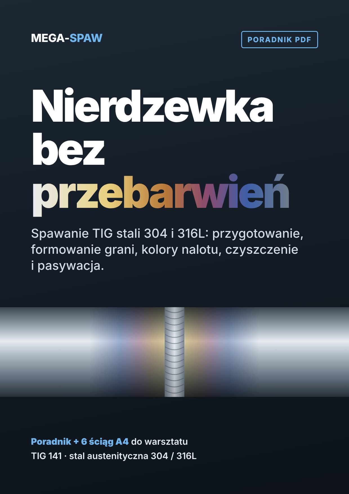
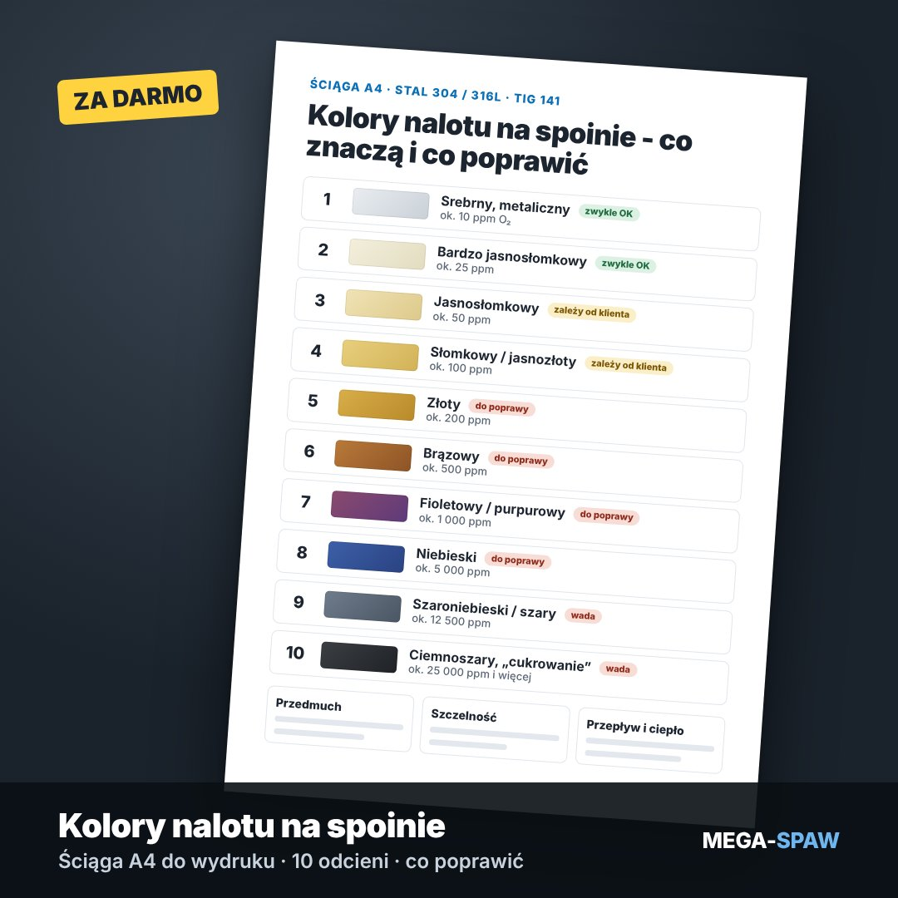

Papiery do spawania nierdzewki, o które pyta klient z przemysłu. Gotowe do wypełnienia dziś.
WPS dla TIG 141, dziennik spawania, protokół VT, próba szczelności, odbiór i rejestr atestów. W Wordzie i Excelu, z przykładami wypełnienia. Plus poradnik, jak spawać 304 i 316L bez przebarwień.
Pola, o które pytają zamawiający w przetargach: dziennik spawania z odwołaniem do WPS, protokół VT wg PN-EN ISO 17637, kryteria PN-EN ISO 5817, plan spawania i badań. Przygotowane przez MEGA-SPAW - firmę, która spawa instalacje 304/316L dla przemysłu spożywczego i chemicznego.
Przedsprzedaż: płacisz od razu na stronie (BLIK-iem, kartą albo Przelewy24), pliki dostajesz e-mailem najpóźniej w ciągu 7 dni od płatności.
Znasz to?
„Proszę przesłać WPS i dziennik spawania”
Zapytanie z zakładu albo przetarg. Termin za tydzień. A Ty masz spawarkę, nie biuro jakości.
Grań wygląda jak spalona
Na czarnej stali wychodzi. Na nierdzewce lico jest złote albo niebieskie, a grań szara i chropowata.
Rdza przy spoinie po roku
Instalacja z „nierdzewki” rdzewieje. Zwykle winne są nalot, brak formowania albo żelazo ze szczotki.
Co dostajesz
Szablony warsztatu - 8 dokumentów
- WPS - instrukcja technologiczna spawania TIG 141
- Dziennik spawania (Excel, z listą spawaczy i ważnością uprawnień)
- Protokół badań wizualnych spoin (VT)
- Protokół próby szczelności / ciśnieniowej
- Protokół odbioru i przekazania instalacji
- Rejestr atestów materiałowych 3.1
- Checklista instalacji higienicznej
- Plan spawania i badań
179 zł cena końcowa

Poradnik „Nierdzewka bez przebarwień” + 6 ściąg
- 304 czy 316L - decyzja w 4 pytaniach
- Wolfram, gaz, spoiwo - co naprawdę ma znaczenie
- Formowanie grani: korki, przedmuch, przepływ, 10 błędów
- Kolory nalotu - co znaczą i co poprawić
- Czyszczenie, trawienie, pasywacja
- Ściągi A4 do powieszenia w warsztacie
- PDF: 19 stron A4 z okładką, ze schematami i listą źródeł
49 zł cena końcowa
Jak to działa
1. Wstawiasz logo i dane
Otwierasz pliki w Wordzie i Excelu. Nagłówek firmy wpisujesz raz i zapisujesz jako własny wzór.
2. Wypełniasz według przykładu
Obok każdego pustego dokumentu masz wypełniony przykład. Widać, co wpisać w każde pole.
3. Oddajesz klientowi
Drukujesz, podpisujesz, dołączasz do oferty albo do odbioru. Numer złącza łączy dziennik, WPS, protokół VT i odbiór.
Uczciwie: czego te szablony nie robią
- Nie zastępują WPQR. Gdy prace wymagają kwalifikowanej technologii, WPS musi mieć poparcie w badaniach w jednostce.
- Nie dają uprawnień spawacza ani certyfikatu ISO 3834 / EN 1090.
- Nie zawierają treści norm (są chronione i płatne). Są w nich odwołania do numerów norm i pola, które trzeba wypełnić.
- Wymagania Twojego klienta mają pierwszeństwo. Instrukcja pokazuje, jak dopasować dokument.

Ściąga A4: kolory nalotu na spoinie
10 odcieni od srebrnego do szarego. Co znaczy każdy z nich, ile tlenu było w gazie i co poprawić: przedmuch, przepływ, szczelność korków. Do wydruku.
Zobacz ją od razu: otwórz ściągę. Zostaw e-mail, a wyślemy ją w PDF i od czasu do czasu napiszemy o poradniku i szablonach.
Pytania
Czy to przejdzie u mojego klienta albo audytora?
Szablony mają pola, o które zwykle pytają zamawiający: dziennik spawania z WPS, protokół VT z odwołaniem do PN-EN ISO 17637 i kryteriów PN-EN ISO 5817, atesty materiałowe. Ostateczne wymagania ustala klient - zawsze sprawdź jego specyfikację.
Wzory można znaleźć za darmo w internecie?
Pojedyncze tak, zwykle po angielsku. Polskiego kompletu, w którym dokumenty odwołują się do siebie (dziennik → WPS → protokół VT → odbiór), nie znaleźliśmy. Tu masz 8 takich dokumentów, każdy z przykładem wypełnienia.
Mam już swoje wzory. Po co mi to?
Porównaj je ze spisem pól na stronie oferty. Jeśli masz wszystko - nie kupuj.
Czy szablon WPS zastępuje WPQR?
Nie. Gdy prace wymagają kwalifikowanej technologii, WPS musi mieć poparcie w WPQR wystawionym przez jednostkę. Szablon porządkuje dokument i pokazuje, co wpisać.
W jakim formacie są pliki?
Szablony: Word (.docx) i Excel (.xlsx), z przykładami wypełnienia i instrukcją w PDF. Poradnik i ściągi: PDF do czytania na telefonie i do wydruku.
Kiedy dostanę pliki?
Trwa przedsprzedaż. Płacisz od razu na stronie (BLIK-iem, kartą albo Przelewy24), a pliki dostajesz e-mailem najpóźniej w ciągu 7 dni od płatności. Jeśli nie dotrzymamy tego terminu, możesz odstąpić od umowy i dostaniesz zwrot całej wpłaty.
Czy dostanę fakturę?
Tak. Sprzedawca jest zwolniony z VAT (art. 113 ust. 1 ustawy o VAT), więc faktura jest bez VAT, a cena na stronie jest ceną końcową.
Czy mogę zwrócić pliki?
Przy treściach cyfrowych prawo odstąpienia od umowy wygasa, gdy za Twoją wyraźną zgodą zaczniemy dostarczanie (wyślemy pliki) przed upływem 14 dni. Zanim kupisz, widzisz pełną listę dokumentów i ich pól. Szczegóły: regulamin.